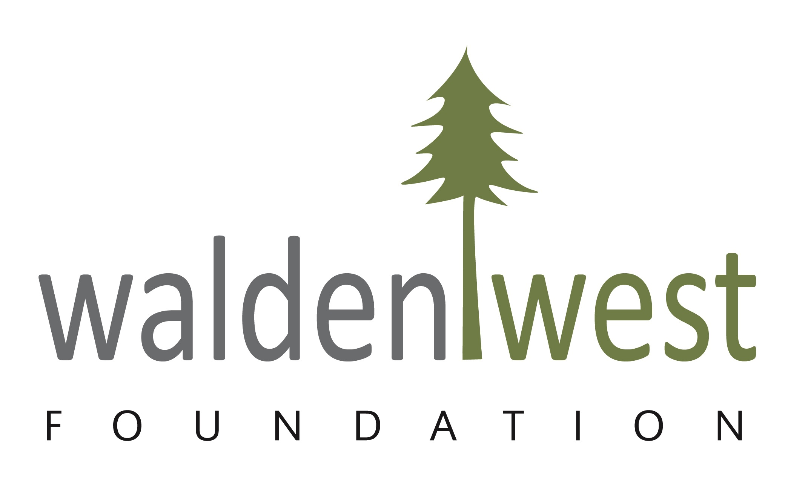

About the Company
Our team is cohesive, with each member lending expertise and skill to the fundraising, marketing, and design components of our transformation of the Walden West campus.
In 2001 the Foundation embarked on a journey to upgrade Walden West’s 35-acre campus from a collection of old and obsolete structures to a state of the art, comprehensive science center. We are well on our way and much has been accomplished, but more work is needed.
What I Did
Being a volunteer cabin leader at Walden West involves serving as a mentor and guide for a group of campers during their stay at the Walden West Outdoor School. Cabin leaders typically assist with organizing activities, ensuring the safety and well-being of campers, fostering a positive and inclusive environment, and providing support and encouragement throughout the camp experience. This role often requires strong communication skills, leadership abilities, patience, and a passion for outdoor education and working with children. Cabin leaders play a vital role in helping campers develop new skills, build friendships, and create lasting memories in a natural outdoor setting.